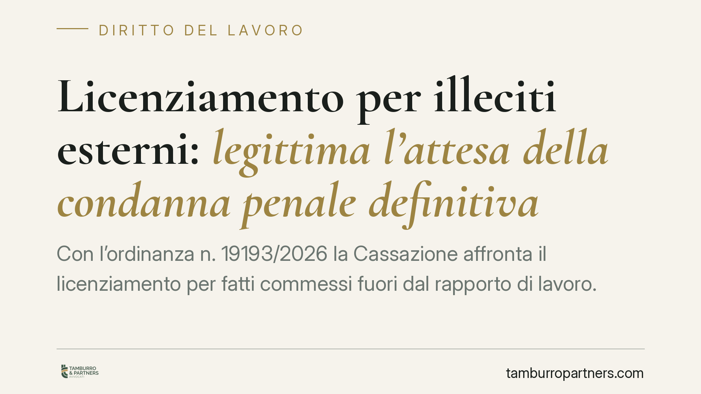

Licenziamento per illeciti esterni: legittima l'attesa della condanna penale definitiva
Con l'ordinanza n. 19193/2026 la Cassazione affronta il licenziamento per fatti commessi fuori dal rapporto di lavoro. Quando il CCNL subordina il recesso al giudicato penale, il datore può attendere la condanna definitiva senza violare il principio di immediatezza della contestazione, da leggere in senso relativo. Una precisazione che ridisegna i tempi della reazione disciplinare.

Il caso
Un dipendente con qualifica di quadro viene coinvolto in un procedimento penale per condotte estranee all'attività lavorativa. Il datore di lavoro, anziché avviare subito il procedimento disciplinare, attende la conclusione del processo penale e procede al licenziamento solo dopo la condanna definitiva.
Il lavoratore impugna il recesso lamentando la violazione del principio di immediatezza della contestazione: a suo dire, l'attesa prolungata avrebbe reso tardiva e quindi illegittima la sanzione. La Cassazione, Sezione Lavoro, respinge questa lettura.
Inquadramento normativo
La cornice è l'art. 7 della Legge n. 300/1970 (Statuto dei lavoratori), che disciplina le garanzie procedurali del provvedimento disciplinare: contestazione preventiva dell'addebito, diritto di difesa del lavoratore e tempestività dell'azione datoriale. Il ricorso è stato proposto ai sensi dell'art. 360, comma 1, n. 3 c.p.c., per violazione di norme di diritto.
L'immediatezza della contestazione è un principio di elaborazione giurisprudenziale: il datore deve reagire all'illecito entro un tempo ragionevole, perché un ritardo eccessivo può segnalare tolleranza del fatto o pregiudicare il diritto di difesa. La Cassazione, però, da tempo chiarisce che l'immediatezza va intesa in senso relativo, non assoluto: il termine decorre dal momento in cui il datore acquisisce piena e certa conoscenza dei fatti.
Il principio affermato
Il punto decisivo è il collegamento tra il licenziamento e il giudicato penale. Quando il contratto collettivo (CCNL) subordina espressamente la sanzione espulsiva all'accertamento definitivo della responsabilità penale, il datore non è obbligato ad agire prima.
In questi casi, infatti, la "piena conoscenza" rilevante ai fini dell'immediatezza coincide con il passaggio in giudicato della condanna. Prima di quel momento il datore dispone solo di una notizia di reato o di un accertamento non definitivo, insufficiente a fondare in modo certo l'addebito previsto dal contratto collettivo.
Attendere la condanna definitiva, dunque, non è inerzia colpevole ma rispetto delle condizioni poste dal CCNL. Il principio di immediatezza non viene violato perché il termine di reazione decorre dal giudicato, non dal fatto storico.
Implicazioni pratiche
Per il datore di lavoro, la pronuncia offre un margine operativo importante nelle ipotesi di illeciti extralavorativi: se il contratto collettivo àncora la sanzione all'esito penale, è legittimo sospendere ogni iniziativa fino alla sentenza definitiva, senza il rischio che il recesso venga poi annullato per tardività.
Per il lavoratore, cambia la prospettiva difensiva. Contestare la tardività del licenziamento diventa più complesso quando la fonte collettiva collega esplicitamente la sanzione al giudicato: la difesa dovrà concentrarsi sul contenuto della clausola contrattuale e sulla reale decorrenza della conoscenza certa.
Resta fermo che il principio vale solo in presenza di una previsione del CCNL che richieda l'accertamento penale definitivo. In assenza di tale clausola, il datore conserva l'onere di attivarsi tempestivamente sulla base degli elementi disponibili, senza poter invocare l'attesa del processo.
Va inoltre ricordato che la rilevanza disciplinare di un fatto extralavorativo non è automatica: occorre dimostrare che la condotta, pur esterna al rapporto, sia idonea a ledere il vincolo fiduciario, tanto più in presenza di qualifiche elevate come quella di quadro.
Cosa fare in concreto
- Verificate la clausola del CCNL applicabile: controllate se la sanzione espulsiva per illeciti extralavorativi è subordinata alla condanna penale definitiva.
- Documentate la data di conoscenza certa: individuate con precisione il momento del passaggio in giudicato, perché da lì decorre il termine di reazione.
- Non confondete sospensione e tolleranza: se decidete di attendere il giudicato, formalizzate la scelta e astenetevi da comportamenti che indichino accettazione del fatto.
- Valutate il nesso con il vincolo fiduciario: motivate perché la condotta esterna incide sul rapporto, soprattutto per figure apicali.
- Agite con tempestività dopo la sentenza: una volta intervenuto il giudicato, avviate senza ritardo la contestazione per non vanificare il principio dell'immediatezza relativa.
Consigliamo di coordinare fin dall'inizio la gestione del procedimento penale e di quello disciplinare, per evitare incertezze sui termini e sulla qualificazione dei fatti.
Disclaimer
Contributo informativo a cura di Tamburro & Partners - Avv. Giuseppe Tamburro. Non costituisce parere legale.
Ogni storia di lavoro ha i suoi tempi.
Se gestisci HR e vuoi un confronto su contenzioso, ispezioni o licenziamenti, scrivi allo studio. Ti rispondiamo entro un giorno lavorativo.